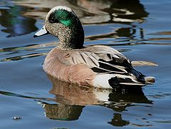
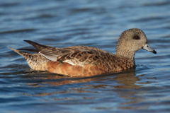
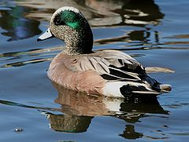
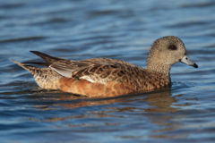

| American Wigeon | |
|---|---|
|  | |
| Male | |
|  | |
| Female | |
| Conservation status | |
| Binomial name | |
| Anas americana Gmelin, 1789 |
|
| Synonyms | |
|
Mareca americana (but see text) |
| American Wigeon | |
|---|---|
|  | |
| Male | |
|  | |
| Female | |
| Conservation status | |
| Binomial name | |
| Anas americana Gmelin, 1789 |
|
| Synonyms | |
|
Mareca americana (but see text) |
The American Wigeon, also American Widgeon or Baldpate, (Anas americana) is a species of wigeon in the dabbling duck genus Anas. If this is split up, all wigeons will go into their old genus Mareca again. It is a common and widespread duck which breeds in all but the extreme north of Canada and Alaska and also in the Interior West through Idaho, Colorado, the Dakotas, and Minnesota, as well as eastern Washington and Oregon.[2][3] It is the New World counterpart of the Eurasian Wigeon. The conservation status of this bird is Least Concern.[1]
This dabbling duck is migratory and winters farther south than its breeding range, in the southern half of the United States, Idaho, Washington, Oregon, and the Mid-Atlantic coastal region,[2][3] and further south into Central America and northwestern South America.[4] It is a rare but regular vagrant to western Europe. It is highly gregarious outside of the breeding season and will form large flocks.[2]
The American Wigeon is larger than a teal but smaller than a pintail, it's a medium-size bird, In silhouette, the wigeon can be distinguished from other dabblers by its round head, short neck, and small bill.[5] It is 45–56 cm (18–23 inches) long, with a 32 inch wingspan and a weight of 1.6 pounds.[2] This wigeon has two adult molt per year and a juvenile molt in the first year, as well.[2]
The breeding male (drake) is a striking bird with a mask of green feathers around its eyes and a cream colored cap running from the crown of its head to its bill. This white patch gives the wigeon its other common name, baldpate (pate is another word for head). Their belly is also white.[3] In flight, drakes can be identified by the large white shoulder patch on each wing. These white patches flash as the birds bank and turn. In non-breeding (eclipse) plumage, the drake looks more like the female.[5]
The hens are much less conspicuous, having primarily gray and brown plumage. Both sexes have a pale blue bill with a black tip, a white belly, and gray legs and feet.[5] The wing patch behind the speculum is gray. They can be distinguished from most ducks, apart from Eurasian Wigeon by shape. However, that species has a darker head and all grey underwing. The head and neck coloring of the female is different as opposed to the Eurasian Wigeon.[3] It nests on the ground, near water and under cover. It lays 6–12 creamy white eggs. Flocks will often contain American Coots.[2]
The American Wigeon is a noisy species, and in the field can often be identified by their distinctive calls. Drakes produce a three note whistle, while hens emit hoarse grunts and quacks.[5] The male whistle makes a whoee-whoe-whoe, whereas the female has a low growl qua-ack.
The American Wigeon is a bird of open wetlands, such as wet grassland or marshes with some taller vegetation, and usually feeds by dabbling for plant food or grazing, which it does very readily. While on the water, wigeon often gather with feeding coots and divers and are notorious for grabbing pieces of vegetation brought to the surface by diving water birds. For this reason, they are sometimes called “poacher” or “robber” ducks. Wigeon also commonly feed on dry land, eating waste grain in harvested fields and grazing on pasture grasses, winter wheat, clover, and lettuce. Having a largely vegetarian diet, most wigeon migrate in the fall well before northern marshes begin to freeze.[5]
Wigeon have an extensive breeding range stretching from the Western United States to the Arctic. The majority of the population breeds on wetlands in the Boreal Forest and subartic river deltas of Canada and Alaska. Although wigeon are found in each flyway, they are most numerous in the Pacific Flyway. Key wintering areas here include the Central Valley of California and Washington's Puget Sound. Farther east, the Texas Panhandle and the Gulf Coast of Louisiana and Texas also support large numbers of wintering wigeon.[5]
In 2009, an estimated 2.5 million breeding wigeon were tallied in the traditional survey area—a level just below the 1955-2009 average. In recent decades, wigeon numbers have declined in the prairie-parkland region of Canada and increased in the interior and west coast of Alaska. Wigeon are often the fifth most commonly harvested duck in the United States, behind mallards, green-winged teal, gadwalls, and wood ducks.[5]

{kind=link}
{kind=link}
{kind=link}